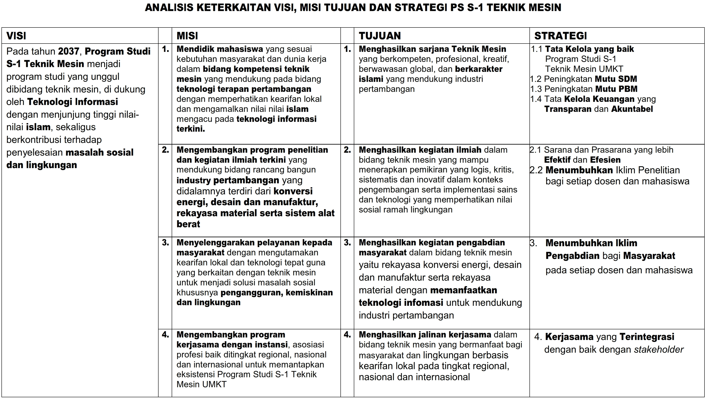
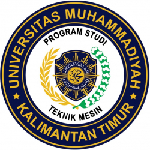

-
Prodi
Programme
S.T. (Mechanical Engineering)
Program Studi S1 Teknik Mesin UMKT merupakan pusat pendidikan Sarjana Teknik Mesin dengan ciri khas Islami yang bertujuan menyiapkan sarjana Teknik Mesin yang terampil serta memilki keahlian dalam merancang dan mengoperasikan mesin-mesin industri dan alat berat. Selanjutnya dalam mendukung visi Universitas Muhammadiyah Kalimantan Timur sebagai Universitas dengan keunggulan dalam bidang IT, lulusan Program ini dibekali dengan kemampuan mengoperasikan program-program komputer di bidang Engineering Designs seperti AutoCAD, Inventor, Solidworks, CATIA, ABAQUS dan ANSYS serta program sertifikasi keahlian seperti Welding Engineer dan Sertifikasi Operator/Mekanik Alat Berat.
 Setelah menyelesaikan program ini, mahasiswa dapat bekerja di berbagai bidang seperti industri manufaktur dan otomotif, perusahaan minyak dan gas, perusahaan tambang, peneliti, teknopreneur dan bidang-bidang lain yang relevan.
Gelar yang diperoleh bagi yang telah menyelesaikan program ini adalah Sarjana Teknik (S.T. Teknik Mesin).
Head of Programme:
Khanif Setiyawan, S.T., M.T.
Secretary of Programme:
Anis Siti Nurrohkayati, S. T., M. T
Entry Requirements:
Jalur Reguler dan Prestasi
1. Reguler
Program ini disarankan kepada calon mahasiswa melalui jalur Reguler.
Syarat pendaftaran:
Fotocopy KTP.
Foto berwarna 3 X 4 = 2 Lembar.
Fotocopy KK 1 Lembar
Tanda Bukti Pendaftaran Online ( di cetak)
Bukti Pembayaran biaya pendaftaran
2. Program Minat dan Prestasi (PMDP)
Program ini diselenggarakan untuk memberikan kesempatan kepada calon mahasiswa yang memiliki minat dan prestasi akademik atau non akademik yang tinggi di sekolah menengah (SMU, SMK atau MA) untuk diterima sebagai mahasiswa Universitas Muhammadiyah Kalimantan Timur tanpa tes.
A. Prestasi Akademik
Berupa peringkat di kelas atau sekolah (10 terbaik) atau nilai minimal 80, yang dibuktikan dengan keterangan peringkat atau piagam penghargaan. Mahasiswa akan mendapatkan potongan Dana Pengembangan Pendidikan sebesar Rp 1.000.000. Peserta adalah siswa Kelas III SMU/SMK/MA tahun ajaran 2018/2019.
A. Prestasi Non Akademik
Prestasi non akademik meliputi bidang olahraga, seni budaya, keagamaan dan kegiatan lainnya. Dibuktikan dengan adanya bukti keterangan prestasi atau sertifikat kejuaraan dan sejenisnya (minimal tingkat Kabupaten). Mahasiswa akan mendapatkan :
1. Prestasi Tingkat Kabupaten
Mendapatkan bebas DPP 50% dan free SPP Tetap 1 Semester.
2. Prestasi Tingkat Provinsi
Mendapatkan bebas DPP 50% dan free SPP Tetap 2 Semester.
3. Prestasi Tingkat Nasional
Mendapatkan bebas DPP 100% dan free SPP Tetap 2 Semester.
4. Prestasi Tingkat Internasional
Mendapatkan bebas DPP 100% dan free SPP Tetap dan SPP Variable selama 8 Semester.
Duration of Study:
4 tahun atau 8 semester.
Tuition Fees:
Pengembangan (1X)
Per Semester*
Variabel Per SKS
Orientasi (1X)
Rp. 2.500.000
Rp. 1.350.000
Rp. 100.000
Rp. 1.100.000
*Sudah Termasuk Asuransi dan Infak
Keterangan:
Pembayaran DPP diangsur 2 (dua) kali pada tahun pertama.
Gelombang I dapat Potongan DPP Rp 500.000
Alumni SLTA Muhammadiyah Dapat Potongan DPP 20%
Contact Us
You may contact us by sending an email, or feel free to use our online inquiry systemContact Us
Phone: +62-541-748511
Email: fst@umkt.ac.id
Connect with Us
We're on Social Networks. Follow us & get in touch.

International Journal